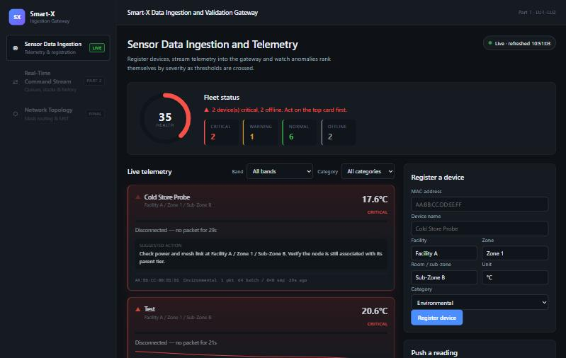

Smart-XIoT data ingestion, forecasting & mesh routing

The problem
A fleet of IoT sensors streams readings into a gateway every few seconds. Some packets are malformed, some devices drop offline, and some readings cross dangerous thresholds. Operators need to know, at a glance, which device needs attention first, what is likely to go wrong next, and how to keep data flowing when a link fails.
What I built
- A Minimal API gateway that registers devices from a sensor catalogue (with validated MAC addresses and a Facility → Zone → Room hierarchy) and ingests typed telemetry through a pipeline with observers.
- A separate simulator project that streams packets and injects anomalies on purpose, so the system can be demonstrated realistically.
- Reading history kept in an AVL tree, short-term forecasting, and a suggestions engine with a proactive dispatcher that pushes actions to a live command stream.
- A wireless mesh view: devices form a weighted graph, routes follow a minimum spanning tree, and the network heals itself when a node drops (the Topology page).
- A Blazor Server dashboard with a fleet health score, search backed by a trie, live readings and encrypted file attachments per device.
Key decisions
Data structures chosen for the job
An AVL tree keeps each device's history sorted for fast range queries, a trie gives instant search as you type, and a weighted graph with a minimum spanning tree decides mesh routes.
Generic, typed telemetry
A generic TelemetryPacket<T> carries double, int and bool readings without boxing to object, so invalid types fail at compile time.
No database where none is needed
State is held in memory and snapshotted to JSON on a timer and on shutdown, so the system survives restarts without the overhead of running a database.
Results
- 676 xUnit tests in 37 fixtures run on every push.
- One-command start with Docker Compose.
- Demo videos for Part 1, Part 2 and the Final PoE.